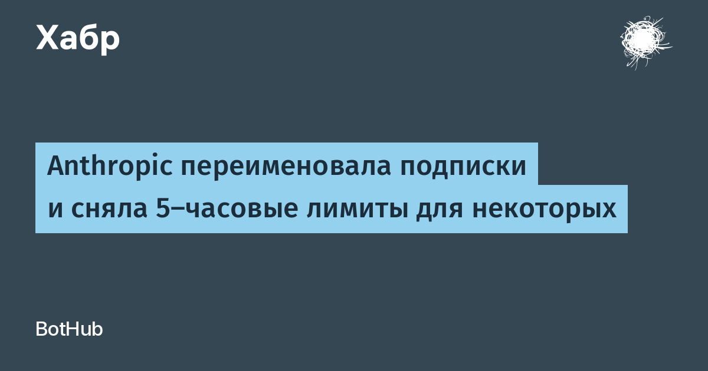

30 октября Anthropic объявила о переименовании старших тарифов Claude: подписка Max 5x теперь называется просто Max ($100 в месяц), а Max 20x — Claude Ultra ($200 в месяц). Цены остались прежними, действующих подписчиков перевели автоматически. Главное изменение спрятано не в названии: на официальном портале цен Ultra официально получила статус «No 5-hour limit» — пятичасового окна ожидания между сессиями больше нет, но только для аккаунтов, прошедших проверку личности.
В сравнении тарифов на официальной странице всё видно без прикрас: у Ultra строка «лимит каждые 5 часов» теперь и вовсе отсутствует, а недельная квота — 10x от Pro, ровно как была у прежнего Max 20x. То есть хвастливое «20x» в старом названии относилось к пятичасовому окну, а не к реальному объёму работы за неделю — переименование просто убрало этот маркетинговый туман. Общая недельная «потолок» не вырос: переработать лимит хитрыми сессиями не получится.
Ultra-подписка также удваивает бонус на API-кредиты: $200 в месяц вместо $100 на Max, плюс доступ к модели Fable до половины недельной квоты, приоритет в часы пик и ранний доступ к новым функциям.
Сноска на странице цен уточняет: отсутствие пятичасового лимита действует для верифицированных аккаунтов. Новым пользователям ограничение временно оставляют — в Anthropic объясняют это защитой от злоупотреблений; после проверки аккаунта обещают письмо на почту. Большинство действующих подписчиков Ultra на новые условия уже переведены.
Пятичасовое окно было главным раздражителем «тяжёлых» пользователей Claude Code: длинная агентная сессия могла упереться в таймер посреди задачи. На этой неделе Anthropic уже расширяла лимиты после сделки с вычислительными мощностями SpaceX, а теперь переформатировала сами тарифы — судя по официальной странице, компания переходит от гонки «иксов» к честному делению на недельные квоты.